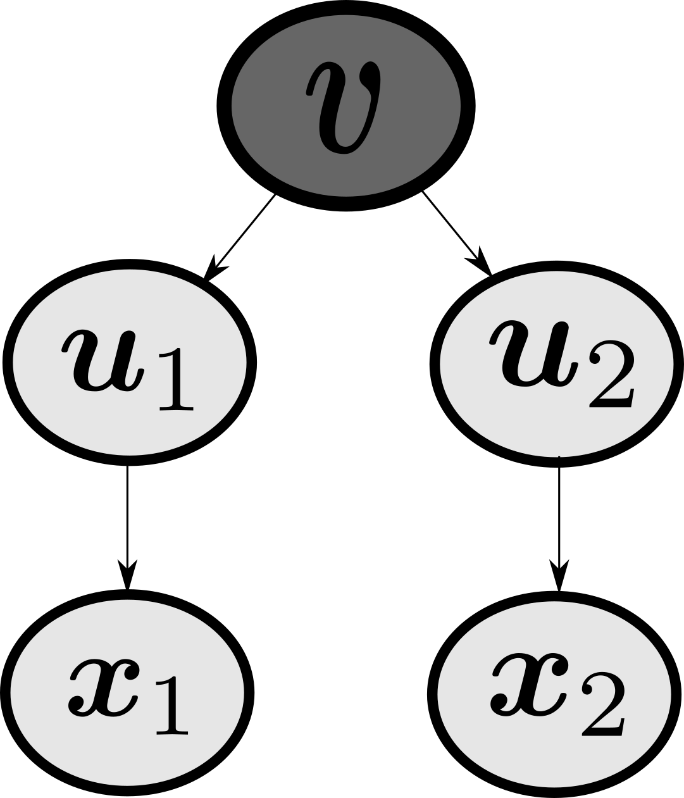

I need to note that a lot of this post was inspired by RaviSoji’s PLDA implementation
Let us say that we have a training dataset $X \in \mathbb{R}^{N\times F}$ and $y \in \mathbb{R}^N$, where $N$ is the number of examples in the whole dataset, $F$ is the number of features in the dataset, $K$ specifies the number of classes that there are, and $\boldsymbol{m} \in \mathbb{R}^F$ represents the mean vector of the entire dataset $X$.
from mnist import MNIST
from sklearn.decomposition import PCA
import scipy
ds = MNIST("/home/data/MNIST")
ds.gz = True
images, labels = ds.load_training()
X = np.array(images)#.reshape(-1,28,28)
y = np.array(labels)
K = len(np.unique(y))
F = len(X[0])
m = np.mean(X,axis=0)
For a classification problem we will create several subspaces:
- $\mathcal{D}$ represents the space where the data lives in
- $\mathcal{X}$ represents the subspace found via PCA where the data in $\mathcal{D}$ gets transformed to the subspace $\mathcal{X}$. Here, you may consider $\mathcal{X}$ to be the space of the preprocessed state
- $\mathcal{U}$ represents the subspace found via PLDA, where the data will be ultimately transformed to, which is described in detail by Ioffe 2006
- $\mathcal{U}_{model}$ represents the subspace within $\mathcal{U}$ which contains only the dimensions that are relevant to the problem
So, in general, the data will first flow in the following fashion \(\mathcal{D} \leftrightarrow \mathcal{X} \leftrightarrow \mathcal{U} \leftrightarrow \mathcal{U}_{model}\)
First, for a classification problem, we perform a PCA to reduce the dimensionality, and get rid of features that may not be very important. In other words, we will bring the data from $\mathcal{D}$ to $\mathcal{X}$. For this one needs to determine the number of components that one would want to take into account for in its subspace, and set that as the matrix rank. This can be predefined or not. If it is not defined, we compute the covariance matrices for each of the classes (i.e. a between-class covariance matrix and a within-class covariance matrix per class $k$). In other words
For each class
- Compute the mean vectors $m_k \in \mathbb{R}^F$
- Compute the covariance matrix $\sigma_k \in \mathbb{R}^{F\times F}$
- Compute the between-class covariance matrix per class $S_{b,k} \in \mathbb{R}^{F\times F}$ \(S_{b,k} = \frac{n_k}{N}\underbrace{(\boldsymbol{m}_k - \boldsymbol{m})^T}_{\mathbb{R}^{F\times 1}} \underbrace{(\boldsymbol{m}_k - \boldsymbol{m})}_{\mathbb{R}^{1\times F}}\)
- Compute the within-class covariance matrix per class $S_{w,k} \in \mathbb{R}^{F\times F}$ \(S_{w,k} = \frac{n_k-1}{N} \odot \sigma_{k}\)
Then compute the within-class and between-class covariance matrices, $S_w \in \mathbb{R}^{F\times F}$ and $S_b \in \mathbb{R}^{F\times F}$ respectively. If one was to set \(\boldsymbol{m}_{ks} \in \mathbb{R}^{K\times F}\) as the matrix representing all of the mean vectors, $\boldsymbol{\sigma_{ks} \in \mathbb{R}^{K\times F \times F}}$ the tensor representing all of the class covariances, and $n_{ks}\in \mathbb{R}^K$ a vector representing all of the number of examples in each class, it is possible to vectorize it all as
\[\begin{align} S_b &= \underbrace{\frac{n_{ks}}{N} \underbrace{(\boldsymbol{m}_k - \boldsymbol{m})^T}_{\mathbb{R}^{F\times K}}}_{\mathbb{R}^{F\times K}} \underbrace{(\boldsymbol{m}_k - \boldsymbol{m})}_{\mathbb{R}^{K\times F}} \\ S_w &= \sum_{k} S_{w,k} \\ &= \sum_{k} \underbrace{\sigma_{ks}}_{\mathbb{R}^{K\times F \times F}} \odot \underbrace{\frac{n_k-1}{N}}_{\mathbb{R}^K} \\ &= \sum_{k} \underbrace{\sigma_{ks}}_{\mathbb{R}^{K\times F \times F}} \cdot \underbrace{\frac{n_k-1}{N}\text{[:, None, None]}}_{\mathbb{R}^{K\times 1 \times 1}} \end{align}\]n_principal_components = None # This might overfit
if n_principal_components:
matrix_rank = n_principal_components
else:
m_ks, sigma_ks, n_ks = [],[],[]
for k in range(K):
# Get only the data associated with class k
X_k = X[y==k]
# Compute the mean, number of samples, and class covariance
m_k = np.mean(X_k,axis=0)
n_k = len(X_k)
sigma_k = np.cov(X_k.T)
# Append them all
m_ks.append(m_k)
n_ks.append(n_k)
sigma_ks.append(sigma_k)
m_ks = np.array(m_ks)
n_ks = np.array(n_ks)
sigma_ks = np.array(sigma_ks)
assert m_ks.shape == (K,F)
assert n_ks.shape == (K,)
assert sigma_ks.shape == (K,F,F)
S_b = ((m_ks - m).T * n_ks/N) @ (m_ks - m)
S_w = np.sum(sigma_ks * ((n_ks-1)/N).reshape(-1,1,1), axis=0)
matrix_rank = np.linalg.matrix_rank(S_w)
if F != matrix_rank:
pca = PCA(n_components = matrix_rank)
pca.fit(X)
Now, there are going to be several transformations:
- $\mathcal{D} \rightarrow \mathcal{X}$
Here, there are two case scenarios. If PCA was defined in order to reduce the dimensions, then the data in $\mathcal{D}$ will be transformed via PCA. Otherwise, you can return the data itself
- $\mathcal{X} \rightarrow \mathcal{D}$
In this case, it is very similar to the converse. If PCA was defined, in order to bring it back to the original data space $\mathcal{D}$, you need to inverse transform the data. Otherwise, just return the data itself
def transform_from_D_to_X(x):
global pca
if pca:
return pca.transform(x)
else:
return x
def transform_from_X_to_D(x):
global pca
if pca:
return pca.inverse_transform(x)
else:
return x
So, at this point, we convert the training data from $\mathcal{D}$ to the space $\mathcal{X}$, having the data be represented as $X_{pca}$
X_pca = transform_from_D_to_X(X)
print("Shape of X_pca =",X_pca.shape)
# Shape of X_pca = (60000, 712)
In the PLDA, we use a Gaussian mixture model, where $\boldsymbol{x}$ retpresents a sample in the mixture, and $\mathcal{y}$ represents the center of a mixture component. In general, the class-conditional distributions is represented by
\[P(\boldsymbol{x} | \boldsymbol{y}) = \mathcal{N}(\boldsymbol{x}|\boldsymbol{y}, \Phi_w)\]where all of the class-conditional distributions share one common covariance [I DON’T KNOW WHY THEY ALL SHARE THE SAME COVARIANCE]
If we recall, the LDA formulation is the result if we were to set $\mu_k$ values to be constrainted to be in a lower dimension, and perform the likelihood maximization with respect to $\mu_k$, $\pi_k$, and $\Phi_w$, where the priord of the class variable $\boldsymbol{y}$ is set to put a probability mass on each of the points
\[P_{LDA}(\boldsymbol{y}) = \sum_{k=1}^{K} \pi_k \delta(\boldsymbol{y}-\mu_k)\]But that won’t be the case in the PLDA formulation. Instead, PLDA sets it so taht the prior is not to be within a discrete set of values, but instead, sampled from a Gaussian prior.
\[P_{PLDA}(\boldsymbol{y}) = \mathcal{N}(\boldsymbol{y} | \boldsymbol{m}, \Phi_b)\]Note that this normal distribution $P_{PLDA}(y)$ uses the mean of the full dataset. This formulation makes it such that $\Phi_w$ is positive definite, and $\Phi_b$ is positive semi-definite. Theoretically, it is possible to find a transformation $V$ which can simultaneously diagonalize $\Phi_b$ and $\Phi_w$
\[\begin{align} V^T \Phi_b V &= \Psi \\ V^T \Phi_w V &= I \end{align}\]We can define $A = V^{-T} = \text{inv}(V^T)$, resulting in
\[\begin{align} \Phi_w &= AA^T \\ \Phi_b &= A\Psi A^T \end{align}\]Thus, the PLDA model is defined as:
\[\bbox[teal, 4pt]{\begin{align} \boldsymbol{x} &= \boldsymbol{m} + A \boldsymbol{u} \quad \text{where} \\ & \boldsymbol{u} \sim \mathcal{N}(\cdot | \boldsymbol{v}, I) \\ & \boldsymbol{v} \sim \mathcal{N}(\cdot | 0, \Psi) \end{align}}\]Here, $\boldsymbol{u}$ represents the sample data representation of $\boldsymbol{x}$, but projected in the lated projected space $\mathcal{U}$, and $\boldsymbol{v}$ represents the sample label in the lated projected space. These transformations can be computed via
\[\boldsymbol{x} = \boldsymbol{m} + A \boldsymbol{u} \quad \leftrightarrow \quad \boldsymbol{u} = V^T (\boldsymbol{x} - \boldsymbol{m})\] \[\boldsymbol{y} = \boldsymbol{m} + A \boldsymbol{v} \quad \leftrightarrow \quad \boldsymbol{v} = V^T (\boldsymbol{y} - \boldsymbol{m})\]And from this point on, we determine the optimal $\boldsymbol{m}$, $A$, and $\Psi$ are.
S. Ioffe: “In the training data, the grouping of examples into clusters is given, and we learn the model parameters by maximizing the likelihood. If, instead, the model parameters are fixed, likelihood maximization with respect to the class assignment labels solves a clustering problem”
def transform_from_X_to_U(x):
global m, A
return (x-m) @ np.linalg.inv(A)
def transform_from_U_to_X(x):
global m, A
return m + (x @ A.T)
But, at this point, we don’t know what the parameters $A$ or $\Psi$ are, so we can’t use these functions yet.
Learning the Model Parameters ($\boldsymbol{m}, \Psi, A$)
The loading matrix $A$ is essentially finding the variances $\Phi_b$ and $\Phi_w$, and all of the parameters can be defined using a maximum likelihood framework. Let us say that $D_k$ represents the dataset which contains only samples from the $k^{th}$ class, and $\boldsymbol{x}_k^i$ represents the $i^{th}$ sample from $D_k$, and it belongs to the $k^{th}$ class. Given $N$ training examples separated into $K$ classes, and assuming that they are all independently drawm from their respective class, the log likelihood is
\[l(\boldsymbol{x}^{1 \cdots N}) = \sum_{k=1}^K \ln P(\boldsymbol{x}^i : i \in D_k) = \sum_{k=1}^K \ln P(\boldsymbol{x}^1_k, \cdots, \boldsymbol{x}^n_k)\]where the joint probability distribution of a set of $n$ patterns (assuming all these $n$ patterns belong to the same class $k$) is:
\[\begin{align} P(\boldsymbol{x}^1_k, \cdots, \boldsymbol{x}^n_k) &= \int \color{red}{P(\boldsymbol{x}^1_k | \boldsymbol{y})} \cdots \color{cyan}{P(\boldsymbol{x}^n_k | \boldsymbol{y})} \color{magenta}{P(\boldsymbol{y})} d\boldsymbol{y} \\ &= \int \color{red}{\mathcal{N}(\boldsymbol{x}^1_k | \boldsymbol{y}, \Phi_w)} \cdots \color{cyan}{\mathcal{N}(\boldsymbol{x}^n_k | \boldsymbol{y}, \Phi_w)} \color{magenta}{\mathcal{N}(\boldsymbol{y} | 0, \Phi_b)} d\boldsymbol{y} \end{align}\]By computing the integral, we obtain
\[\color{red}{MAGIC}\] \[\ln P(\boldsymbol{x}^1_k,\cdots, \boldsymbol{x}^n_k) = C - \frac{1}{2}\left[\ln |\Phi_b + \frac{\Phi_w}{n}| + tr\left((\Phi_b+ \frac{\Phi_w}{n})^{-1} (\bar{\boldsymbol{x}}_k-\boldsymbol{m})(\bar{\boldsymbol{x}}_k-\boldsymbol{m})^T\right) + (n-1) \ln |\Phi_w| + tr\left(\Phi_w^{-1} ( \sum_{i=1}^n (\boldsymbol{x}^i_k - \bar{\boldsymbol{x}}_k)(\boldsymbol{x}^i_k - \bar{\boldsymbol{x}}_k)^T)\right)\right]\]where \(\bar{\boldsymbol{x}}_k = \frac{1}{n} \sum_{i=1}^n \boldsymbol{x}^i_k\), and $C$ is a constant that can be ignored
At this point, as a “hack”, it sets the number of examples for each class to be $n$. In other words, every class ends up having exactly $n$ examples to learn from. Now, if one were to maximize the equation $l(\boldsymbol{x}^{1\cdots N})$ with respect to $\boldsymbol{m}$, one would obtain $\boldsymbol{m}^* = \frac{1}{N} \sum_i \boldsymbol{x}^i$. If one substitutes it back, one would get
\[\begin{align} l(\boldsymbol{x}^{1\cdots N}) &= \sum_{k=1}^K \ln P(\boldsymbol{x}^1_k, \cdots, \boldsymbol{x}^n_k) \\ &= -\sum_{k=1}^K \frac{1}{2}\left[\ln |\Phi_b + \frac{\Phi_w}{n}| + tr\left((\Phi_b+ \frac{\Phi_w}{n})^{-1} \color{cyan}{(\bar{\boldsymbol{x}}_k-\boldsymbol{m})(\bar{\boldsymbol{x}}_k-\boldsymbol{m})^T} \right) + (n-1) \ln |\Phi_w| + tr\left(\Phi_w^{-1} \color{red}{( \sum_{i=1}^n (\boldsymbol{x}^i_k - \bar{\boldsymbol{x}}_k)(\boldsymbol{x}^i_k - \bar{\boldsymbol{x}}_k)^T)} \right) \right] \\ &= \cdots \\ &= \color{red}{\text{MAGIC}} \\ &= \cdots \\ &= - \frac{c}{2} \left[ \ln |\Phi_b + \frac{\Phi_w}{n} | + \text{tr} \left( (\Phi_b + \frac{\Phi_w}{n})^{-1} \color{cyan}{S_b} \right) + (n-1) \ln |\Phi_w | + n \text{tr} (\Phi_w^{-1} \color{red}{S_w}) \right] \end{align}\]Now, we need to optimize $l(\boldsymbol{x}^{1\cdots N})$ with respect to $\Phi_b$ and $\Phi_w$ subject to $\Phi_w$ being p.d. and $\Phi_b$ being p.s.d. Without these constraints, we would obtain
\[\Phi_w = \frac{n}{n-1} S_w \quad \text{and} \quad \Phi_b = S_b - \frac{1}{n-1} S_w\]Therefore, if $S_w$ and $S_b$ are diagonal, then the covariances $\Phi_w$ and $\Phi_b$ will also be diagonal, and the diagonalization property holds as long as the contraints above are satisfied.
As we have previously stated, we know that
\[\Phi_b = A \Psi A^T\]If you fix $\Psi$ and maximize $l(\boldsymbol{x}^{1\cdots N})$ via unconstrained optimization with respect to $A^{-1}$ will make $A^{-1}S_b A^{-T}$ and $A^{-1}S_w A^{-T}$, making the $A^{-T}$ to be the solution of the generalized eigenvector problem involving $S_b$ and $S_w$, where $S_b \boldsymbol{v} = \lambda S_w \boldsymbol{v}$. Then, the projection of the data to the latent space with the LDA projection. [REVIEW]
Then, if you were to optimize $l(\boldsymbol{x}^{1\cdots N})$ with respect to $\Psi$ subject to $\Psi \geq 0$ and $\text{rank}(\Psi) \leq \hat{F}$, then we’ll get the method to optimize the model [REVIEW]
Ioffe 2006: “Our method was derived for the case where each class in the training data is represented by the same number $n$ of examples. This may not be true in practice, in which case, we can resample the data to make the number of examples the same, use EM (as shown in section 5), or use approximations. We took the latter approach, using the closed-form solution in Fig. 2, where $n$ was taken to be the average number of examples per class”
Algorithm: PLDA Optimization
Input: Training $N$ examples from $K$ classes, with $n = N/K$ per class
Output: Parameters $\boldsymbol{m}, A, \Psi$, maximizing the likelihood of the PLDA model
- Compute the covariance matrices $S_b$, and $S_w$
- Compute the transformation matrix $W$ such that $S_b \boldsymbol{w} = \lambda S_w \boldsymbol{w}$ (i.e. $eig(S_w^{-1}S_b)$)
- Compute the covariance matrices in the latent space
- $\Lambda_b = W^T S_b W$
- $\Lambda_w = W^T S_w W$
- Determine the following parameters
- $\boldsymbol{m} = \frac{1}{N} \sum_{i=1}^N \boldsymbol{x}_i$
- $A = W^{-T} \left( \frac{n}{n-1} \Lambda_w \right)^{1/2}$
- $\Psi = \max \left( 0, \frac{n-1}{n} (\Lambda_b / \Lambda_w) - \frac{1}{n} \right)$
- Reduce the dimensionality to $\hat{F}$ by keeping the largest elements of $\Psi$, while setting the rest to zero.
- In the latent space $\boldsymbol{u} = A^{-1}(\boldsymbol{x}-\boldsymbol{m})$, only the features for non-zero entries are needed for recognition
Note:
Scipy’s
eigh(A,B)function inlinalgsolves the generalized eigenvalue problem for a complex Hermittian or a real symmetric matrix, so that $A\boldsymbol{v} = \lambda B \boldsymbol{v}$. Otherwise, ifBis ommited, then it is assumed that $B=I$
Also note thatscipy.linalg.eigh != np.linalg.eigh
def compute_Sb_Sw(X,y):
m = np.mean(X,axis=0)
_,F = X.shape
m_ks, sigma_ks, n_ks = [],[],[]
for k in range(K):
# Get only the data associated with class k
X_k = X[y==k]
# Compute the mean, number of samples, and class covariance
m_k = np.mean(X_k,axis=0)
n_k = len(X_k)
sigma_k = np.cov(X_k.T)
# Append them all
m_ks.append(m_k)
n_ks.append(n_k)
sigma_ks.append(sigma_k)
m_ks = np.array(m_ks)
n_ks = np.array(n_ks)
sigma_ks = np.array(sigma_ks)
assert m_ks.shape == (K,F)
assert n_ks.shape == (K,)
assert sigma_ks.shape == (K,F,F)
S_b = ((m_ks - m).T * n_ks/N) @ (m_ks - m)
S_w = np.sum(sigma_ks * ((n_ks-1)/N).reshape(-1,1,1), axis=0)
return S_b, S_w
assert X.shape[0] == y.shape[0]
m = X_pca.mean(axis=0)
n = N/K
S_b, S_w = compute_Sb_Sw(X_pca,y)
# Compute W
eigvals, eigvecs = scipy.linalg.eigh(S_b, S_w)
W = eigvecs
# Compute Lambdas
Lambda_b = W.T @ S_b @ W
Lambda_w = W.T @ S_w @ W
# Compute A
A = np.linalg.inv(W.T) * (n / (n-1) * np.diag(Lambda_w))**0.5
print(A.shape)
# Compute Psi
diag_Lambda_w = Lambda_w.diagonal()
diag_Lambda_b = Lambda_b.diagonal()
Psi = (n - 1)*(diag_Lambda_b/diag_Lambda_w) - (1/n)
Psi[ Psi <= 0 ] = 0
Psi = np.diag(Psi)
From this point you can transform the data that is in the PCA subspace $\mathcal{X}$ to the $\mathcal{U}$ subspace, having the data be represented as $U$
u = transform_from_X_to_U(X_pca)
Now, again, not every dimension will be relevant in the $\mathcal{U}$ subspace, and that is why we reduce the $\mathcal{U}$ to \(\mathcal{U}_{model}\) , which only contains the relevant dimensions of $\mathcal{U}$. Therefore, in order to go back and forth in between the two subspaces, simply drop them the irrelevant dimensions or add the relevant dimensions to a zero matrix. This new data will be represented as $U_{model}$
def transform_from_U_to_Umodel(x,dims):
u_model = u[...,dims]
return u_model
def transform_from_Umodel_to_U(x,dims,u_dim):
shape = (*x.shape[:-1], u_dim)
u = np.zeros(shape)
u[..., dims] = x
return u
# Compute the relevant dimensions of Psi
relevant_dims = np.squeeze(np.argwhere(Psi.diagonal() != 0))[0]
if relevant_dims.ndim == 0:
relevant_dims = relevant_dims.reshape(1,)
U_model = transform_from_U_to_Umodel(X_pca,relevant_dims)
Great! Now we we have the data in the $\mathcal{U}_{model}$ space. Now, all that there is left is to understand how to perform inference, and in order to do that, one needs to find the prior parameters for $\boldsymbol{v}$, the posterior parameters, and the posterior predictive parameters. Let’s discuss now how to find the probability parameters.
Inference on the Latent Space
First, if you need some review on Bayesian inference for Gaussian distributions, you may check the other post to understand priors, posteriors, posterior predictives, and marginal probability. For this problem, note that the different dimensions have been decorrelated (i.e. the covariances have been decorrelated), thus the different dimensions could be treated as univariate problems.
We need to determing the prior parameters of $\boldsymbol{v}$, which leads to the probability distribution $P(\boldsymbol{v})$, the posterior parameters, which leads to \(P(\boldsymbol{v} \vert \boldsymbol{u})\) , and the posterior predictive parameters, for \(P(\boldsymbol{u}^p \vert \boldsymbol{u}^g_{1\cdots n})\)
The easiest to determine right off the bat are the prior parameters. For the prior parameters, as one may recall in the model formulation
\[\boldsymbol{v} \sim \mathcal{N}(\cdot | 0, \Psi)\]which, in turn, are simple to compute. Here we’ll call $\mu_{prior}$ the prior mean, and $\Sigma_{prior}$ the prior covariance, making
\[\bbox[teal, 4pt]{\begin{align} \mu^{prior} &= \boldsymbol{0} \\ \Sigma^{prior} &= \Psi_{\forall d \in D} \end{align}}\]where $D$ represents all of the relevant dimensions, which are all that the variances are not zero. Then from this point, we’ll use the notation setting $\hat{\Psi} = \Psi_{\forall d \in D}$
prior_params = {
"mean": np.zeros(relevant_dims),
"cov": np.diag(Psi)[relevant_dims]
}
Now, the more involved ones are the posteriors parameters.
One advantage that PLDA has is that it allows one to make inferences about classes not present during training. Let us consider the following case of classification first. We are given a set of data to learn from, which Ioffe refers to as a “gallery”. This set ${ \boldsymbol{x}^1, \cdots,\boldsymbol{x}^k, \cdots, \boldsymbol{x}^K }$ contains $K$ examples, with one example from each of the $K$ classes. We are also given a probe example $\boldsymbol{x}^p$, and assume that it belongs to one of the $K$ classes. If we are to determine to which class it belongs, maximizing the likelihood will do the job. This can be more easily accomplised in the lated space by performing the trnasformation $\boldsymbol{u} = A^{-1}(\boldsymbol{x} - \boldsymbol{m})$, since it will decorrelate the data. For this example, $\boldsymbol{x}^p$ will be transformed to $\boldsymbol{u}^p$
Single Training Example per Class
Let us consider an example $\boldsymbol{u}^g$ from the training set (i.e. gallery), where, again, it belongs to some class between $1 \cdots K$ The probability that the probe $\boldsymbol{u}^p$ belongs to the same class as $\boldsymbol{u}^g$ is defined by the probability $P(\boldsymbol{u}^p | \boldsymbol{u}^g)$.
So, the posterior probability will provide a way to perform inference on the class variable $\boldsymbol{v}$ (i.e. the transformed version of $\boldsymbol{y}$). As we may remember, the parameters for a posterior Gaussian are
\[\begin{align} \mu^{post} &= \frac{\sigma^2}{N(\sigma^{prior})^2 + \sigma^2}\mu^{prior} + \frac{N(\sigma^{prior})^2}{N(\sigma^{prior})^2 + \sigma^2} \bar{x} \\ (\sigma^{post})^2 &= \frac{\sigma^2(\sigma^{prior})^2}{N(\sigma^{prior})^2 + \sigma^2} \end{align}\]Now, since we only have a single sample $\bar{x} = \boldsymbol{u}$. Additionally, we know that the mean for the prior $\mu^{prior}$ is all zeros (since the data has been centralized), then
\[\begin{align} \mu^{post} &= \frac{N(\sigma^{prior})^2}{N(\sigma^{prior})^2 + \sigma^2} \boldsymbol{u} \\ (\sigma^{post})^2 &= \frac{\sigma^2(\sigma^{prior})^2}{N(\sigma^{prior})^2 + \sigma^2} \end{align}\]Additionally, since we would be looking at a single class at this point and the covariances have been diagonalized, the within-class covariance is an identity matrix, making the $(\sigma^{prior})^2 = 1$. Therefore the parameters turn into
\[\begin{align} \mu^{post} &= \frac{N(\sigma^{prior})^2}{N(\sigma^{prior})^2 + 1} \boldsymbol{u} \\ (\sigma^{post})^2 &= \frac{1(\sigma^{prior})^2}{N(\sigma^{prior})^2 + 1} \end{align}\]And, once again, since we are dealing with a single sample, $N=1$
\[\begin{align} \mu^{post} &= \frac{(\sigma^{prior})^2}{(\sigma^{prior})^2 + 1} \boldsymbol{u} \\ (\sigma^{post})^2 &= \frac{(\sigma^{prior})^2}{(\sigma^{prior})^2 + 1} \end{align}\]The posterior can then be defined as
\[\bbox[teal, 4pt]{P(\boldsymbol{v} | \boldsymbol{u}) = \mathcal{N}\left(\boldsymbol{v} \bigg| \frac{\hat{\Psi}}{\hat{\Psi} + I}\boldsymbol{u}, \frac{\hat{\Psi}}{\hat{\Psi} + I}\right)}\]Now, if we see how this flows, the class variable $\boldsymbol{v}$ will be used to determine $\boldsymbol{u}$ examples, which are then used to determine the data $\boldsymbol{x}$.
from graphviz import Digraph
dot = Digraph()
dot.node('v',"v")
dot.node('1',"u1")
dot.node('2',"u2")
dot.node("a","x1")
dot.node("b","x2")
dot.edges(['v1',"v2","1a","2b"])
dot

From probabilistic graphical models, if we observe $\boldsymbol{v}$ (i.e. $\boldsymbol{v}$ is given), then $\boldsymbol{u}^p$ and $\boldsymbol{u}^g$ are conditionally independent. We also know that the posterior predictive probability is
\[P(x|\boldsymbol{X}) = \mathcal{N} (x|\mu^{post}, (\sigma^{post})^2 + \sigma^2)\]And since the within class variance has been diagonalized to an identity matrix ($\sigma^2 = 1$), we’ll obtain
\[\bbox[teal, 4pt]{P(\boldsymbol{u}^p | \boldsymbol{u}^g) = \mathcal{N}\left(\boldsymbol{u}^p \bigg| \dfrac{\hat{\Psi}}{\hat{\Psi} + I} \boldsymbol{u}^g, I + \dfrac{\hat{\Psi}}{\hat{\Psi} + I} \right)}\]In order to classify $\boldsymbol{u}^p$, then we compute $P(\boldsymbol{u}^p \vert \boldsymbol{u}^g) \forall g \in {1,\cdots,M }$, and pick the maximum.
Ioffe 2006: “With PLDA, we were able to combine the knowledge about the general structure of the data, obtained during training, and the examples of new classes, yielding a principled way to perform classification”
Multiple Training Examples Per Class
We can improve the recognition performance by using more examples. Let us say that we have $n_k$ examples from class $k$, making
\[n_k = |U_{model,k}|\]These examples are all independent examples $\boldsymbol{u}_{1\cdots n}^g$. Just as before, we know that, here, we are looking at a single class $k$. We have previously diagonalized all of the covariance matrices, making all of the dimensions (i.e. features) decorrelated, thus they can be worked on individually as if they were univariate features. This also means that the within-class covariance is an identity matrix, making $\sigma^2 = 1$. As we may remember, the parameters for a posterior Gaussian are
\[\begin{align} \mu^{post} &= \frac{\sigma^2}{N(\sigma^{prior})^2 + \sigma^2}\mu^{prior} + \frac{N(\sigma^{prior})^2}{N(\sigma^{prior})^2 + \sigma^2} \bar{x} \\ (\sigma^{post})^2 &= \frac{\sigma^2(\sigma^{prior})^2}{N(\sigma^{prior})^2 + \sigma^2} \end{align}\]Again, since our model estimates that the prior mean $\mu^{prior}$ is all zeros, then
\[\begin{align} \mu^{post} &= \frac{N(\sigma^{prior})^2}{N(\sigma^{prior})^2 + \sigma^2} \bar{x} \\ (\sigma^{post})^2 &= \frac{\sigma^2(\sigma^{prior})^2}{N(\sigma^{prior})^2 + \sigma^2} \end{align}\]Since we’re looking at the class $k$, then $N=n_k$ and $\bar{x} = \bar{\boldsymbol{u}}_k$. Thus the posterior for multiple samples is
\[\bbox[teal, 4pt]{P(\boldsymbol{v} | \boldsymbol{u}_k^{1\cdots n_k} ) = \mathcal{N}\left(\boldsymbol{v} \bigg| \dfrac{n_k \hat{\Psi}}{n_k \hat{\Psi}+I}\bar{\boldsymbol{u}}_k, \dfrac{\hat{\Psi}}{n_k \hat{\Psi}+I} \right) }\]Therefore, in order to compute the posterior parameters, where $\mu_k^{post}$ and $\Sigma_k^{post}$ are the mean posterior and the covariance posterior for each class $k$, we have
\[\bbox[teal, 4pt]{\begin{align} \Sigma^{post}_k &= \frac{\hat{\Psi}}{n_k \hat{\Psi} + I} = \Sigma^{prior} \odot \frac{1}{1 + n_k \cdot \Sigma^{prior}} \\ \mu_k^{post} &= \frac{n_k \hat{\Psi}}{n_k \hat{\Psi} + I} \bar{\boldsymbol{u}}_k = \underbrace{\left( \sum_{\boldsymbol{u} \in U_{model,k}} \boldsymbol{u} \right)}_{n_k \bar{\boldsymbol{u}}_k} \cdot \Sigma^{post}_k \end{align}}\]where we can recall that $\Sigma^{prior} = \hat{\Psi}$, and $\bar{\boldsymbol{u}}_k = \frac{1}{n_k}(\boldsymbol{u}_k^1 + \cdots + \boldsymbol{u}_k^{n_k})$
posterior_params = {}
for k in np.unique(y):
u_model_k = u_model[y==k]
n_k = len(u_model_k)
cov = prior_params["cov"] / (1 + n_k * prior_params["cov"])
mean = np.sum(u_model_k, axis=0) * cov
posterior_params[k] = {"mean": mean, "cov":cov}
As per page 535 by Ioffe 2006, if one sets multiple examples of a class to a single model, assuming we have $n_k$ independent examples \(\{ \boldsymbol{u}_k^i \}_{i=1}^{n_k}\), then the probability of obtaining a sample $\boldsymbol{u}^p$, given the set above, can be obtained from the posterior predictive
\[P(x|\boldsymbol{X}) = \mathcal{N} (x|\mu_N, \sigma_N^2 + \sigma^2)\]Once again, since the within-class covariance has been diagonalized to an identity matrix, then $\sigma^2 = 1$
\[\bbox[teal, 4pt]{P(\boldsymbol{u}^p | \boldsymbol{u}_k^{1\cdots n_k}) = P(\boldsymbol{u}^p | \boldsymbol{u}_k^1, \cdots, \boldsymbol{u}_k^{n_k}) = \mathcal{N} \left( \boldsymbol{u}^p \bigg| \dfrac{n_k \hat{\Psi}}{n_k \hat{\Psi} + I} \bar{\boldsymbol{u}}_k, I + \dfrac{\hat{\Psi}}{n_k \hat{\Psi} + I} \right) }\]where $\bar{\boldsymbol{u}}_k = \frac{1}{n_k}(\boldsymbol{u}_k^1 + \cdots + \boldsymbol{u}_k^{n_k})$
This means that, you may compute the predictive parameters as copying the posterior parameters ($\mu_k^{postpred}$, $\Sigma_k^{postpred}$), and adding an identity matrix to the covariance
\[\bbox[teal, 4pt]{\begin{align} \mu_k^{postpred} &= \frac{n_k \hat{\Psi}}{n_k \hat{\Psi} + I} \bar{\boldsymbol{u}}_k = \mu_k^{post} \\ \Sigma_k^{postpred} &= I + \frac{\hat{\Psi}}{n_k \hat{\Psi} + I} = I + \Sigma_k^{post} \end{align}}\]post_pred_params = posterior_params.copy()
for k,params in post_pred_params.items():
params["cov"] += 1
Great! This is all that we need to precompute before performing any inference! At this point, you have determined all of the parameters which describe you data. As a review, in order to prepare this algorithm, we have received a training dataset $X$ and its corresponding labels $y$. Then, we have decided on a certain number of components to be used for a PCA. This PCA will bring the data from the space $\mathcal{D}$ to the space $\mathcal{X}$, obtaining the data $X_{pca}$. Then we found the parameters $\boldsymbol{m}$, $A$, and $\hat{\Psi}$, which optimize the PLDA formulation. These would then allow us to bring the data from the $\mathcal{X}$ subspace to the $\mathcal{U}$ latent space, obtaining the data $U$. Then, we reduced the dimensions of $U$ by discarding any dimensions which had a zero variance in $\hat{\Psi}$, yielding the data $U_{model}$. Finally, using these same parameters, we obtain the prior parameters ($\mu^{prior}$ and $\Sigma^{prior}$), the posterior parameters ($\mu^{post}_k$ and $\Sigma^{post}_k$), and the posterior predictive parameters ($\mu^{postpred}_k$ and $\Sigma^{postpred}_k$)
Now, we’re ready to do the inference on the latent space
We have previously established that we have the classes (i.e. categories) $1,\cdots, K$. What we will do is to iterate through each of the possible classes, and compute its posterior probabilities by using the parameters computed for the posterior predictive probabilities and creating a Gaussian distribution. Finally, we can obtain the probability on that Gaussian at each of those locations. We can also use the log probability for each of the samples on each of the classes
\[\bbox[teal, 4pt]{\begin{align} P_k(\boldsymbol{u}^p | \boldsymbol{u}^{1\cdots n_k}_k) &= \mathcal{N}(\boldsymbol{u}_{model} | \mu_k^{postpred}, \Sigma_k^{postpred}) \\ \boldsymbol{y}^* &= \arg\max_{k} P_k(\boldsymbol{u}^p | \boldsymbol{u}^{1\cdots n_k}_k) \end{align}}\]from scipy.stats import multivariate_normal as gaussian
log_prob_post = []
for k, param in post_pred_params.items():
mean,cov = param["mean"], param["cov"]
log_probs_k = gaussian(mean,np.diag(cov)).logpdf(U_model)
log_prob_post.append(log_probs_k)
log_prob_post = np.array(log_prob_post).T
Here, you may choose to normalize the probabilities
normalize = False
if normalize:
logsumexp = np.log(np.sum(np.exp(log_prob_post),axis=-1))
log_probs = log_prob_post - logsumexp[..., None]
else:
log_probs = log_prob_post
categories = np.array([k for k in post_pred_params.keys()])
predictions = categories[np.argmax(log_probs,axis=-1)]
N = len(X)
shape = [3,2]
inds = np.random.choice(N,np.prod(shape))
plt.figure(dpi=200)
fig, ax = plt.subplots(*shape)
count = 0
for i in np.arange(shape[0]):
for j in np.arange(shape[1]):
ax[i,j].imshow(X[count].reshape(28,28))
title = "True: {} | Pred: {}".format(y[count],predictions[count])
ax[i,j].set_title(title)
count+= 1
If you wanted to extract the LDA features, you could simply use the transformation functions to convert the data from some space to another space.
So this is the case when we have a classification problem where the probes are assumed to belong to one of the trained classes. Now, let us look at the case where the probes belong to classes not yet seen.
Hypothesis Testing
Here, we try to determine whether two samples belong to the same class or not. For that, we can compute the following likelihoods
\[\begin{align} P(\boldsymbol{u}^p)P(\boldsymbol{u}^g) &= \text{likelihood of examples belonging to different classes} \\ P(\boldsymbol{u}^p, \boldsymbol{u}^g) &= \int P(\boldsymbol{u}^p | \boldsymbol{v}) P(\boldsymbol{u}^g|\boldsymbol{v}) P(\boldsymbol{v}) d\boldsymbol{v} \\ &= \text{likelihood of examples belonging to the same class} \end{align}\]As a generalized formulation where there are multiple examples, the likelihood ratio is
\[\begin{align} R(\{\boldsymbol{u}^{1\cdots m}_p\},\{\boldsymbol{u}^{1\cdots n}_g\}) &= \frac{\text{likelihood(same)}}{\text{likelihood(diff)}} = \frac{P(\boldsymbol{u}^{1\cdots m}_p,\boldsymbol{u}^{1\cdots n}_g)}{P(\boldsymbol{u}^{1\cdots m}_p)P(\boldsymbol{u}^{1\cdots n}_g)} \\ P(\boldsymbol{u}^{1\cdots n}) = P(\boldsymbol{u}^1, \boldsymbol{u}^2, \cdots, \boldsymbol{u}^n) &= \int P(\boldsymbol{u}^1 | \boldsymbol{v}) \cdots P(\boldsymbol{u}^n|\boldsymbol{v}) P(\boldsymbol{v}) d\boldsymbol{v} \\ &= \prod_{t=1}^d \frac{1}{\sqrt{(2\pi)^n (\psi_t + \frac{1}{n})}} \exp \left( - \frac{\bar{u}_t^2}{2(\psi_t + \frac{1}{n})} - \frac{\sum_{i=1}^n (u_t^i - \bar{u}_t)^2}{2} \right) \end{align}\]where
\[\bar{u}_t = \frac{1}{n}\sum_{i=1}^n u_t^i\]For the priors $\pi_{\text{same}}$ and $\pi_{\text{diff}}$, the probability that all of the examples are in the same class is
\[\left(1 + \dfrac{\pi_{\text{diff}} / \pi_{\text{same}} }{R} \right)^{-1} = \dfrac{R}{R+\pi_{\text{diff}} / \pi_{\text{same}}}\]If $R > \pi_{\text{diff}} / \pi_{\text{same}}$, the two groups of examples belong to the same class; otherwise they do not.
The between-class feature variances $\psi_t$ indicate how discriminative the features are. For example, if $\psi=0$, then it is a completely non-discriminative feature.
Therefore, we can compute the marginal likelihoods for each of those possibilities:
- Marginal probability of them being from same class, i.e. $P(\boldsymbol{u}_p^{1\cdots m},\boldsymbol{u}_g^{1\cdots n})$
Note that, for the marginal probability that they are from the same class, we will are treating it as a single marginal probability \(P(\boldsymbol{u}_p^{1\cdots m},\boldsymbol{u}_g^{1\cdots n}) =P(\underbrace{\boldsymbol{u}_p^1, \cdots, \boldsymbol{u}_p^m}_{\boldsymbol{u}_p^{1\cdots m}},\underbrace{\boldsymbol{u}_g^1, \cdots, \boldsymbol{u}_g^n}_{\boldsymbol{u}_g^{1\cdots n}})\)
- Marginal probability of them being from different classes, i.e. $P(\boldsymbol{u}_p^{1\cdots m}) \cdot P(\boldsymbol{u}_g^{1\cdots n})$
By taking the logarithmic, we can can more easily deal with infinitesimal probabilities and helps us make multiplications into additions. Therefore, let us consider
\[\begin{align} P(\boldsymbol{u}^{1\cdots n}) = P(\boldsymbol{u}^1, \boldsymbol{u}^2, \cdots, \boldsymbol{u}^n) &= \prod_{t=1}^d \underbrace{\frac{1}{\sqrt{(2\pi)^n (\psi_t + \frac{1}{n})}} }_{C} \exp \left( \underbrace{- \frac{\bar{u}_t^2}{2(\psi_t + \frac{1}{n})}}_{E_1} \underbrace{- \frac{\sum_{i=1}^n (u_t^i - \bar{u}_t)^2}{2} }_{E_2} \right) \\ &= \prod_{t=1}^d C \exp (E_1 + E_2) \\ \log (P(\boldsymbol{u}^{1\cdots n})) &= \sum_{t=1}^d \color{red}{\log (C)} +\color{cyan}{ \log(e^{E_1})} + \color{magenta}{\log(e^{E_2})} \\ &= \sum_{t=1}^d \color{red}{\log (C)} + \color{cyan}{E_1} + \color{magenta}{E_2} \\ &= \sum_{t=1}^d \color{red}{-\frac{n}{2} \log (2\pi) - \frac{1}{2} \log \left(\psi_t + \frac{1}{n} \right)} \color{cyan}{ - \frac{\bar{u}_t^2}{2(\psi_t + \frac{1}{n})} } \color{magenta}{- \frac{\sum_{i=1}^n (u_t^i - \bar{u}_t)^2}{2} } \\ &= \sum_{t=1}^d \color{red}{-\frac{n}{2} \log (2\pi) - \frac{1}{2} \log \left(n\psi_t + 1 \right) + \frac{1}{2} \log(n)} \color{cyan}{ - \frac{n \bar{u}_t^2}{2(n\psi_t + 1)} } \color{magenta}{- \frac{\sum_{i=1}^n (u_t^i - \bar{u}_t)^2}{2} } \end{align}\]It is ideal to work in the logarithmic space. With some magic, we get
\[\color{red}{\text{Can't get my math to align with this}}\]
\[\begin{align} P(\boldsymbol{u}^{1\cdots n}) &= \prod_{t=1}^d C \exp (E_1 + E_2) \\ \log (C) &= -\frac{n}{2} \log(2\pi) - \frac{1}{2} \log(n\Sigma^{prior} + I) \\ \log (e^{E_1}) &= E_1 = \frac{n^2 \Sigma^{prior} \bar{\boldsymbol{u}}^2}{2 (n\Sigma^{prior} + I)} \\ \log (e^{E_2}) &= E_2 = -\frac{1}{2} \sum_{\boldsymbol{u} \in U_{model}} \boldsymbol{u}^2 \\ \log(P(\boldsymbol{u}^{1\cdots n})) &= \sum_{t=1}^d \log(C) + E_1 + E_2 \\ \end{align}\]
Now, note that because the data in $U_{model}$ has been normalized $mean(U_{model}) = \boldsymbol{0}$
def marginal_logprob(U):
n = U.shape[0]
S_prior = prior_params["cov"]
log_C = -0.5 * np.log(2*np.pi) - 0.5 * np.log(n*S_prior + 1)
E1 = 0.5*(n**2 * S_prior * np.mean(U,axis=0)**2)/(n*S_prior + 1)
E2 = - 0.5 * np.sum(U**2, axis=0)
logP_t = log_C + E1 + E2
logP = np.sum(logP_t, axis=-1)
return logP
This way, if we were to receive two sets of data
\[\begin{align} \boldsymbol{u}_p &\in \mathbb{R}^{m\times \hat{F}} \\ \boldsymbol{u}_g &\in \mathbb{R}^{n\times \hat{F}} \end{align}\]We can set a set by concatenating both of them \(\boldsymbol{u}_{pg} \in \mathbb{R}^{(m+n) \times \hat{F}}\)
And then we can pass them through the computation above
\[\begin{align} log(P(\boldsymbol{u}_p^{1\cdots m}) &= \text{log likelihood for probe set} \\ log(P(\boldsymbol{u}_g^{1\cdots n}) &= \text{log likelihood for gallery set} \\ log(P(\boldsymbol{u}_{pg}^{1\cdots m+n}) &= \text{log likelihood for combined set}\\ \end{align}\]Finally, instead of the ratio, we compute the log of the ratio
\[\log(R) = log[P(\boldsymbol{u}_{pg}^{1\cdots m+n})] - [log(P(\boldsymbol{u}_p^{1\cdots m}) + log(P(\boldsymbol{u}_g^{1\cdots n})]\]In such case, since we are dealing with log ratios, negative values mean that the model believes the two datapoints are from different categories, where as positive values indicate that the model believes that the two data points are from the same category.
logprob_p = marginal_logprob(u_p)
logprob_g = marginal_logprob(u_g)
logprob_pg = marginal_logprob(np.concatenate([u_p,u_g]))
log_Ratio = logprob_pg - (logprob_p + logprob_g)
if log_Ratio > 0:
print("Belong to the same class")
else:
print("Belong to different classes")